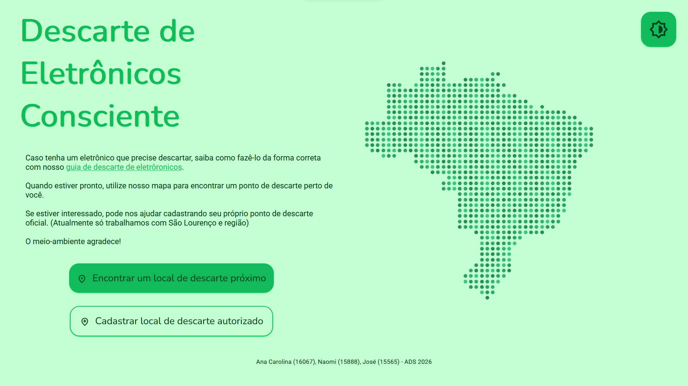
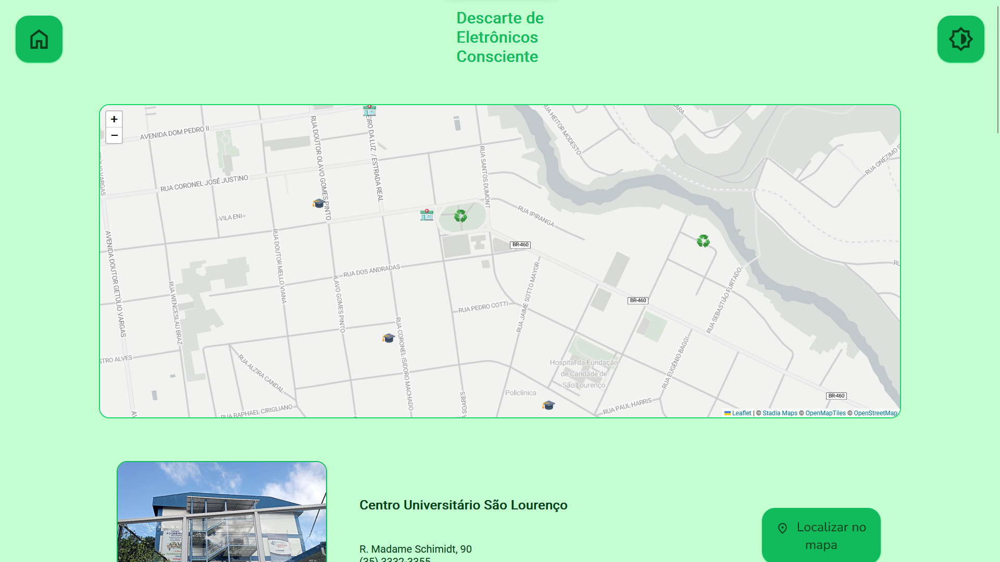

Js
Descarte de Eletrônicos Consciente
Acessar ProjetoDesenvolvido em conjunto com Naomi Marra
Aplicação web com mapa interativo para localização de pontos de descarte de eletrônicos em São Lourenço, MG.

Sobre o Projeto
O DEC é uma plataforma desenvolvida como projeto acadêmico no curso de Análise e Desenvolvimento de Sistemas, com o objetivo de facilitar o acesso da população a pontos de coleta de resíduos eletrônicos na cidade de São Lourenço, MG.

Funcionalidades
- - Mapa interativo com marcadores dinâmicos
- - Dados carreagos em tempo real via banco de dados
- - Ícones diferenciados por categoria
- - Interface responsiva e intuitiva
Tecnologias Utilizadas
| Camada | Tecnologia |
|---|---|
| Front-end | HTML, CSS, JavaScript |
| Mapa | Leafleat.js |
| Back-end | PHP |
| Banco de dados | MySQL |
| Comunicação | Json |
| Hospedagem | cPanel |
Equipe
| Membro | Responsabilidade |
|---|---|
| José | Integração com banco de dados (PHP), geração de JSON, implementação da API Leaflet.js, lógica JavaScript. |
| Naomi | Estrutura e estilização da interface (HTML, CSS e JavaScript), criação e integração com banco de dados (PHP), design do Guia de Descarte em PDF. |
Estrutura de arquivos
DEC/
├── index.html
├── style.css
├── map.php
├── form.js
├── conexao.php
├── cadastro.php
├── icons.svg
├── scripts/
│ ├── script.js
│ ├── dotMap.js
│ └── map.js
├── docs/
│ └── Guia De Descarte.pdf
├── fonts/
│ └── ...
├── imgs/
│ └── ...
└── README.md